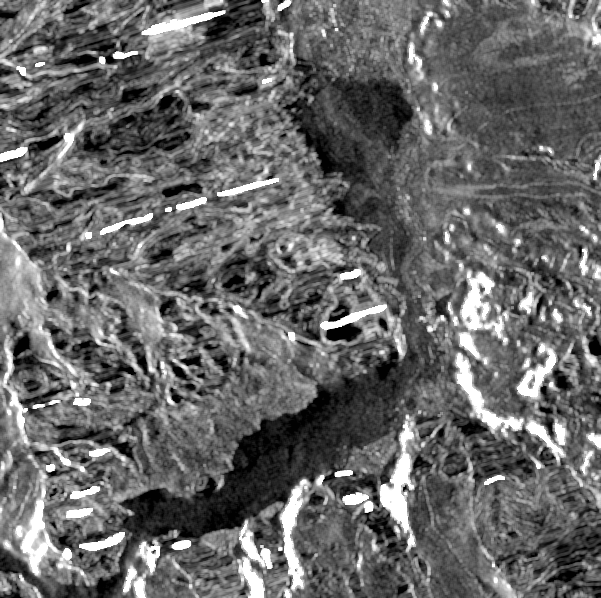
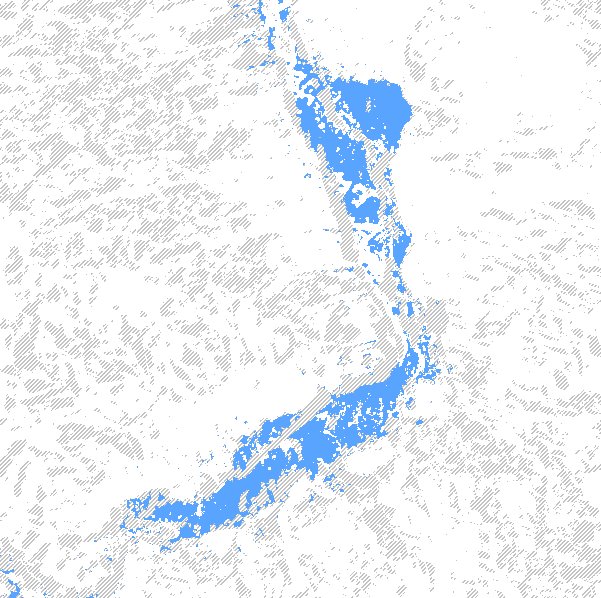
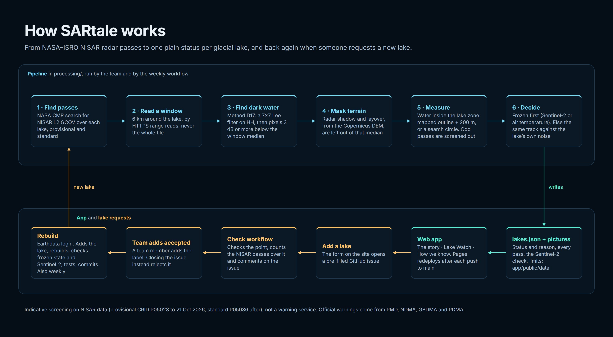

When clouds close in, the lakes stay in view.
SARtale watches glacial lakes in Gilgit-Baltistan and upper Khyber Pakhtunkhwa with NASA–ISRO NISAR radar, which sees through cloud, day or night. Each lake gets one plain status, a chart of every pass and a printable brief.
This guide is for anyone who wants to use the website, run it, rebuild its data or work on the code.


- Run it on your computerInstall, start the app and run the tests in about five minutes.
- Use the websiteThe story page, Lake Watch, each lake's status and the "Add a lake" form.
- Understand the methodHow dark radar pixels become a water area, and when a change counts.
- Handle lake requestsHow a request becomes a GitHub issue, the labels, and how the team accepts or rejects.
Watch the videos
Captions are on by default. On the website the videos play from media/; opened from a clone of the repository, they play from the repository's media/ folder, without captions.
Why it exists#
Over 3,000 glacial lakes have developed in Gilgit-Baltistan and Khyber Pakhtunkhwa (UNDP GLOF-II). SUPARCO tracks 131 of them as potentially dangerous, mostly with optical satellites. The lakes fill in summer, when cloud hides them. SUPARCO's 2 July 2026 update said persistent cloud after 16 June had made lake changes difficult to assess. From 17 June to 4 August 2026, NISAR kept looking at the watched lakes through the cloud; the site gives the count of valid looks from the current data.
How it fits together#

lakes.json; the app reads it. A new lake comes in through a visitor's GitHub issue and the team's review, and a weekly refresh feeds the same rebuild (Lake requests).What is in the repository#
| Folder | What it holds |
|---|---|
app/ | The website: TypeScript, Vite, MapLibre and uPlot. Page text is in app/src/content/; the data it shows is in app/public/data/. |
processing/ | The Python pipeline and its tests. The lake register is processing/lakes_in.json. |
media/ | The demo video, the how-it-works video, screenshots and the workflow figure. |
docs/ | This guide, the data sources and licences, and the AI tool use statement. |
Team#
Team SARcastic Scientists: Saeed Ahmad, Shaharyar Sajid and Usama Hussain. NASA Space Apps Challenge 2026, "Dancing with the SARs", Islamabad local event.
Indicative screening, not a warning service. SARtale uses NASA's provisional NISAR product, which is not validated. Official warnings come from PMD, NDMA, GBDMA and PDMA.